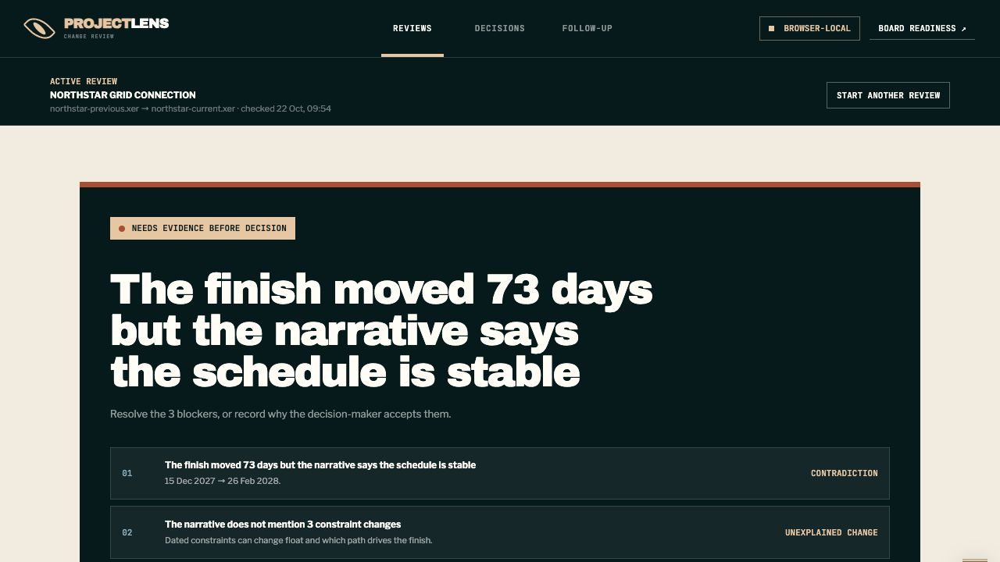
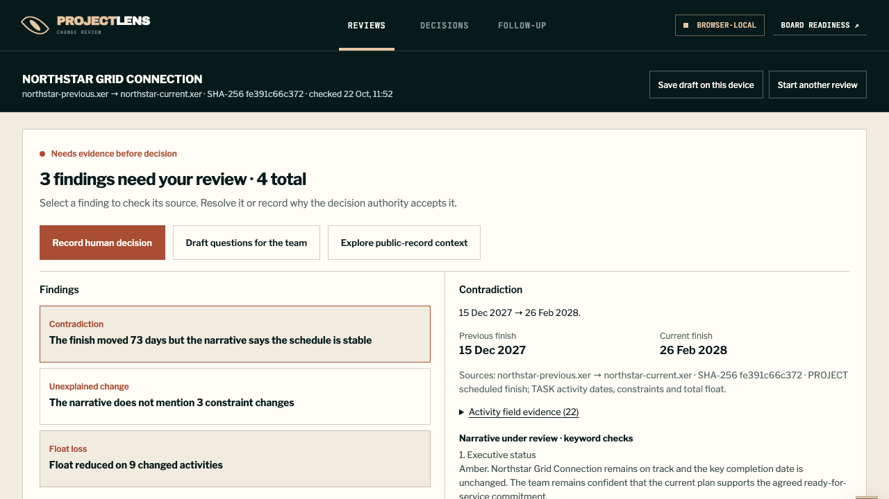

From schedule conflict to an accountable decision
A browser-local evidence desk that checks a change narrative against two schedules and preserves the human decision.
Follow one review, end to end
Open the synthetic Northstar pack, inspect its schedule conflict, change the narrative and rerun the same checks. Choose a human decision, download the evidence-linked record and close an owned condition.
The walkthrough uses the working application's parser, checks, form and registers. Example records stay in memory, separate from saved work, and disappear on reload. Playback pauses for your decision.
Start the guided review · about one minute plus your decision · no account or upload
The problem
A change pack can describe a stable finish while its schedules show movement. A reviewer needs the original source, a clear question and an accountable decision record.
Before and after
Actual captures of the same synthetic task at 1280 × 720. Open either image to inspect the full detail.




Screenshots show the interaction change. They do not establish time saved, adoption or a measured business outcome.
What changed
Before. The result repeated a finding as a large headline. Source context and decision controls sat farther down the page, and saving required Use or Ignore on all three bundled public-record examples.
After. I put the three priority findings beside their source dates, activity fields and changed predecessor links. Additional findings stay available and are saved. Supplemental public-record examples are optional, with untouched examples recorded as not reviewed.
Complete journey
- Load the Northstar example or two supported XER exports and a narrative. Files are parsed in the browser.
- Select a finding and inspect its original fields and narrative. Ask for evidence, or record the human decision with its owner and rationale.
- For conditional approval, supply a condition, owner and due date. Export the evidence-linked record and close the follow-up when complete.
- Save a device draft deliberately to resume after reopening. The saved draft includes source files; delete it when finished.
Evidence and practical value
The synthetic Northstar example preserves the 15 December 2027 to 26 February 2028 finish movement: 73 days. Three findings are prioritised; all four detected findings remain in the record. The revised path can save without dismissing any of the three optional public records. GitHub verification passed 46 Python tests and five browser suites covering desktop/mobile, source integrity, drafts, storage failure, exports and follow-up.
The value demonstrated here is an inspectable, complete review handoff with clear failure and recovery states. The next test is whether representative users find it useful in their own workflow.
Limits
Supported single-project XER fields and keyword checks only. This is not critical-path, causation, contractual entitlement or approval advice. Browser records are local and unsigned. Representative real exports and planner trials remain the next validation step.
Independent public project by Matthew Paver. Synthetic demonstrations, updated 23 October 2026. No client deployment or measured commercial result is claimed.